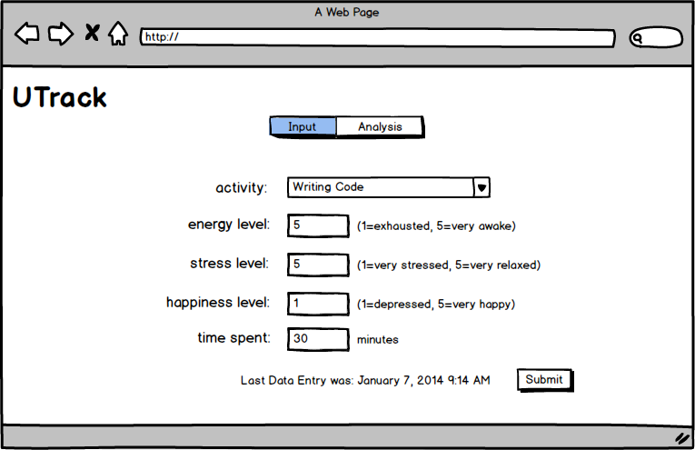
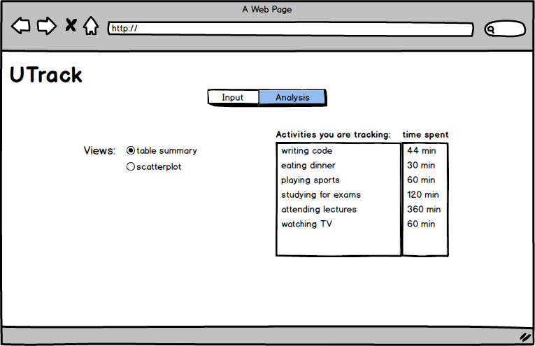
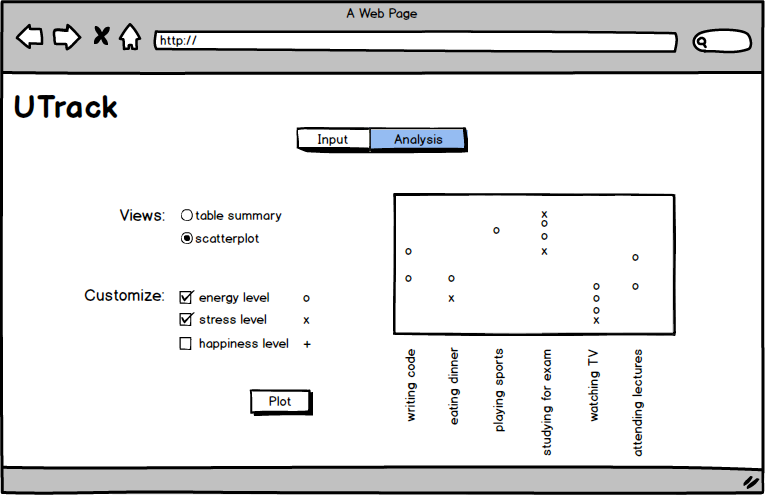

The goals of this assignment are to give you an opportunity to apply the concepts of:
You will do so in the context of creating an interactive, single-page web app.
How is your mental and physical health affected by your activities? Good question!
In this assignment, you will create a "quantified self" web application called UTrack, which allows users to track their daily activities and various health measures. They will also be able to analyze the data through summaries you create.
Specifically, users will be able to choose from a list of activities, then indicate the time spent on the activity, and their energy, stress, and happiness levels while performing that activity:  As you can see in the mock-up, users can also view the last time they entered a data point, and what that data point was.
The energy, stress, and happiness levels should be numbers: You should validate that the data entered is a number before storing it. If it's not, you should alert the user in some fashion. The same goes for the duration of the event (which should be a number in minutes). This alert should be user-friendly and helpful.
The way the user enters their energy, stress, and happiness levels can be modified, as long as their input resolves to a number. You should find an efficient, user-friendly way of supporting this activity, so users aren't discouraged to enter data.
Users will be able to switch to a view that enables them to view summaries, graphs, and plots of their data:  This analysis interface should, at a minimum, support the following views:
You will need to provide the necessary controls to allow the user to switch between these views and choose any relevant parameters for visualizing the data.
As an example, here is a mock-up of what a graph may look like (note: you do not need to worry about having text rotated as shown in the image -- that will be for a future assignment): 
Your implementation must make use of the model-view-controller architecture. Specifically, you must implement the following models, stubbed out in model.js:
ActivityStoreModel
GraphModel
The ActivityStoreModel represents the data points collected by the user. It should
implement a listener interface, as described in the supplied code. Briefly, other code should be
able to register with the model to know when a new data point has been added or deleted (and what that data
point was, and when it was added or deleted).
The GraphModel represents the currently chosen graph to render. It should also provide a
listener interface, as described in the supplied code. In short, code should be able to register with that model
to know when the chosen graph has changed, so the interface can update itself accordingly.
An essential part of software development is testing your code. Developing user interfaces is no different.
For unit testing assignments, we will be using Mocha, Chai, and Sinon. All of the components necessary to do unit testing are included, along with some sample unit tests.
When loaded, the unit_tests.html file will execute the unit tests found in provided_unit_tests.js and marking_unit_tests.js. There is a link at the bottom of the web app's page to go to this unit test. This link should remain within the code, so TAs can easily execute your unit tests.
The provided_unit_tests.js file includes a number of unit tests to test basic aspects of your framework.
You must create at least 5 additional unit tests for this assignment. Add these unit tests after
the existing unit tests, and ensure they execute properly and without error! Note that the
unit tests, as provided, will fail until you implement the code missing in model.js.
The marking_unit_tests.js file is empty: Do not add anything to this. It will be overwritten with our own unit tests at marking time, to further test your code.
We will be testing your model-view-controller architecture, and the classes, in general, to ensure they conform to the specifications provided.
You must complete the assignment within the following constraints:
'use strict';.
addEventListener() means of responding to events in the browser.
To receive a great mark, you must implement the system as described above, under the given constraints, with all unit tests passing, while having an aesthetically pleasing design and a great user experience.
Easy, right?
As a rough guide, about 25% of your mark will be allocated to the visual design and user experience, with the rest allocated to implementation concerns.
TAs will mark your assignment using the latest version of Chrome on whatever platform they use on a daily basis. In theory, the specific platform shouldn't matter. If we find platform differences, we'll handle them as they arise. They will mark the assignment in "offline" mode (i.e., with no access to the Internet).